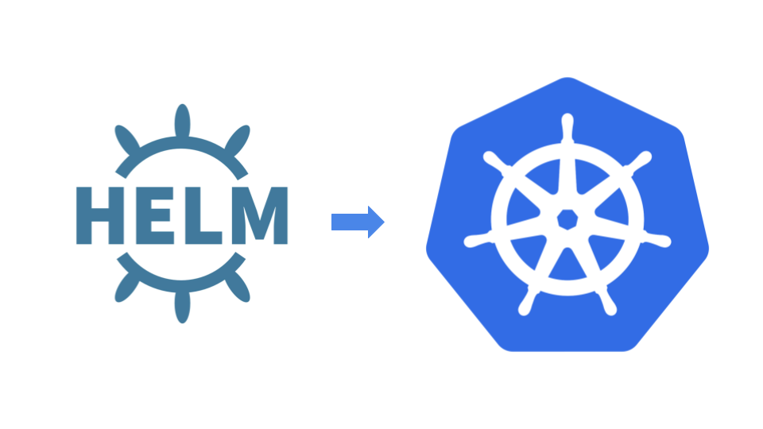
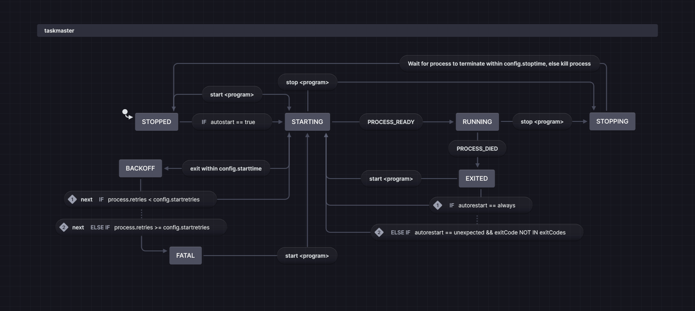
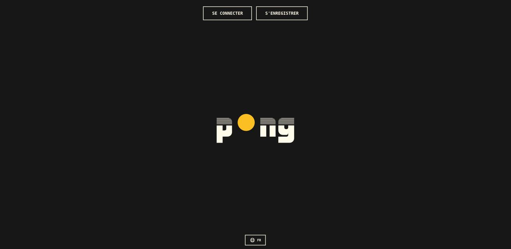
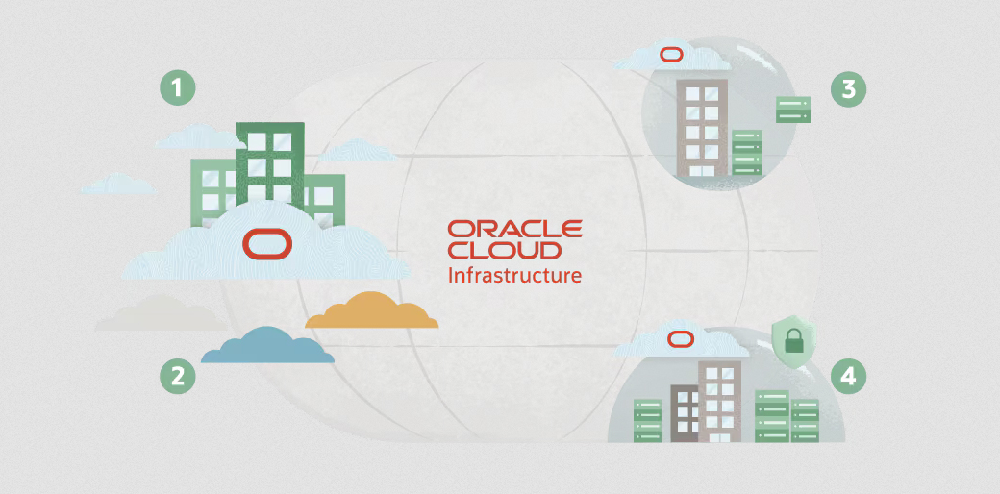

About me

My name is Nicolas Ponchon, welcome to my personal website.
After working for more than ten years as a translator, I decided that I needed to learn even more (programming) languages and so I decided to transition to computer science. I joined the 42 programming school in Barcelona in the summer of 2024, and I completed the program in July 2025.
Since then, I have been specialising in DevOps practices, such as implementing CI/CI piplelines with ArgoCD and GitLab, create and manage Kubernetes clusters, containerise applications with Docker, or automate the deployment of infrastructure on cloud platforms using Ansible and Terraform. You can find some of these projects here.
I am currently looking for opportunities to apply my skills and contribute to captivating projects. Feel free to contact me if you are interested!
When I am not busy debugging OOM-killed pods or failed deployments, I enjoy cycling through the sunny landscapes of Barcelona. I am also a passionate analogue photographer, and you can find some of my work here.
Projects
This is a list of some of my projects, both academic and personal.
• dawn-treader

This project was about migrating a web application hosted on the cloud from a Docker Compose environment to a Kubernetes cluster, using Helm as the packaging tool. I used the GitHub container registry to store the Docker images used in the application, while ArgoCD was responsible for managing the deployment of the Helm chart.
I really wanted to get a hands-on experience with Kubernetes and Helm, and this was an excellent way to try and work things out in a modern DevOps environment.
• taskmaster

This project was about creating a task management application in Go, using the daemon and controller model and UNIX socket communication.
Similar to supervisord, it was designed to manage and monitor background processes. It was an excellent opportunity to learn about process management and concurrency using Go routines and channels.
• ft_transcendence

ft_transcendence was a group project set as the final project of the 42 programming school. It consisted in creating an SPA type web application from zero aimed at recreating the famous Pong game from the 1970s.
In this project, I was responsible for the global architecture of the app and the containerised infrastructure with Docker, as well as the backend development with Node.js. I set up the REST API endpoints and helped implement the authentication system with JWT or the various database queries. I also set up the monitoring services with Grafana and Prometheus.
Aside from the technical aspects, it was a great learning experience that required solid coordination and efficient communication to ensure success.
• oci-instance

This project is in fact a meta project: it contains the IaC (Infrastructure as Code) definitions for managing the OCI (Oracle Cloud Infrastructure) instance from which this very website is hosted on.
I used this project to practice working with Oracle and Terraform, which I had used previously but with AWS services.
I also am using Ansible to provide automated provisioning and configuration management. The website itself is a simple HTML with CSS and vanilla JavaScript.
Gallery
All pictures are my own work. Please click on any image to enlarge.

Barcelona, 2026 · Canon A-1 - Washi S

Above the clouds, 2025 · Olympus XA - Ilford Delta 400
Barcelona, 2023 · Minolta X-9 - Washi S
Contact